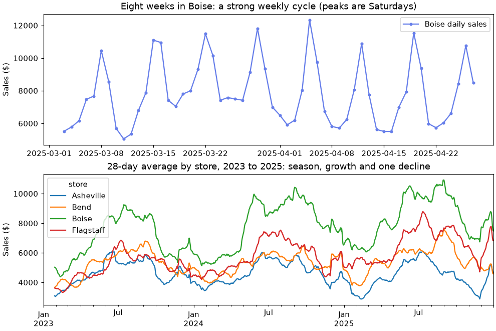

🔄 Lesson 10.4: Sequence Models
Give a neural network a memory: forecast tomorrow's sales at Pinecrest's four stores with recurrent networks in PyTorch, beat two honest naive forecasts, and see how attention, the idea behind transformers, looks things up instead of remembering them.
🎯 Learning Objectives
By the end of this lesson, you will be able to:
- Measure naive and seasonal-naive forecasts and a gradient-boosting model on lag features, and use them as the yardsticks any sequence model must beat
- Turn a time series into sliding windows with a time-based train/test split, and explain why a random split leaks
- Explain how a recurrent cell carries a hidden state through a sequence, and why LSTMs and GRUs add gates
- Build, train and evaluate an LSTM forecaster in PyTorch, reporting the error in dollars
- Describe attention as a soft lookup, compute it by hand, and say when a transformer is (and is not) worth it
In This Lesson
🧭 When Order Matters
Every model so far treated its rows as independent: shuffle the customers and nothing changes. Some data is not like that. Daily sales, sensor readings, words in a sentence and clicks in a session are sequences: the order carries information, and what came just before is often the best clue to what comes next.
Pinecrest's store managers schedule staff and order stock a day ahead, so they want a forecast of tomorrow's sales for each of the four stores (Boise, Bend, Flagstaff and Asheville). In this lesson you will build that forecast with recurrent neural networks (RNNs), the classic deep-learning tool for sequences, and with their more capable cousin, the LSTM. Then you will meet attention, the idea that replaced recurrence in modern language models.
💡 Mental Model: The Store Manager's Notebook
Picture a manager who reads the till report every evening. They do not memorize every number. They keep a short notebook of impressions: "busy week", "the weekend was strong", "things are picking up for summer". Each evening they read the new report, update the notebook, and from the notebook alone they guess tomorrow.
That is a recurrent network. The notebook is the hidden state, a short vector of numbers. Each day's input updates it with the same rule, learned from data. An LSTM is a manager with a better notebook: it can decide what to erase, what to write down and what to read out, so an important note from four weeks ago survives. Attention is a different manager altogether: instead of a notebook, they keep every report in a binder and, each evening, flip back to the pages that look most relevant to tomorrow.
🤔 Why This Matters
Sequence models are behind speech recognition, translation, chatbots and many forecasting systems. Just as important is the discipline this lesson drills: split by time, compare with naive forecasts, and report errors in units a manager understands. A deep model that cannot beat "same as last week" is not worth deploying, and in forecasting that happens more often than tutorials admit. Neither is one that cannot clearly beat a gradient-boosting model on lag features, which is why the project ends with exactly that comparison. Sequence models earn their keep on long, raw, many-signal sequences and on text; on small tabular forecasts they are one good option among several.
📂 The Daily Sales Data
Load three years of daily sales, one row per store per day.
import numpy as np
import pandas as pd
import torch
from torch import nn
print(torch.__version__)
sales = pd.read_csv("data/daily_store_sales.csv", parse_dates=["date"])
print(sales.shape)
print(sales.head(4))Output (yours may vary slightly)
2.14.1+cpu
(4384, 6)
date store sales transactions promo event
0 2023-01-01 Asheville 4838.69 69 0 NaN
1 2023-01-01 Bend 4533.55 65 0 NaN
2 2023-01-01 Boise 6026.92 80 0 NaN
3 2023-01-01 Flagstaff 4217.59 59 0 NaNYour PyTorch version may differ from the first line; everything here works on any recent 2.x release. The event column marks sale days and the two days a year the stores close (Thanksgiving and Christmas Day). For sequence work, a wide table with one column per store and one row per day is easier to slice:
wide = sales.pivot(index="date", columns="store", values="sales")
print(wide.shape)
print(wide.groupby(wide.index.year).mean().round(0))
weekday_order = ["Monday", "Tuesday", "Wednesday", "Thursday", "Friday", "Saturday", "Sunday"]
by_weekday = sales.groupby(sales["date"].dt.day_name())["sales"].mean().reindex(weekday_order)
print(by_weekday.round(0))Output
(1096, 4)
store Asheville Bend Boise Flagstaff
date
2023 4596.0 5158.0 6831.0 4970.0
2024 4649.0 5235.0 7821.0 5744.0
2025 4380.0 5527.0 8342.0 6561.0
date
Monday 4807.0
Tuesday 4437.0
Wednesday 4684.0
Thursday 4894.0
Friday 6226.0
Saturday 8481.0
Sunday 7210.0
Name: sales, dtype: float64Three patterns jump out. Boise and Flagstaff are growing, Bend is flat, and Asheville is slowly declining. There is a strong weekly cycle: Saturday sells almost twice as much as Tuesday. And (in the chart) there is a yearly season, with quiet winters and busy summers. One more property matters for forecasting: how much does today tell you about tomorrow?
import matplotlib.pyplot as plt
for lag in [1, 2, 7, 14]:
print(f"Boise: correlation with {lag:2d} days earlier: {wide['Boise'].autocorr(lag):.3f}")
fig, axes = plt.subplots(2, 1, figsize=(9, 6), layout="constrained")
first_weeks = wide.loc["2025-03-03":"2025-04-27", "Boise"]
axes[0].plot(first_weeks.index, first_weeks.to_numpy(), color="#667eea", marker="o", markersize=3, label="Boise daily sales")
axes[0].set_title("Eight weeks in Boise: a strong weekly cycle (peaks are Saturdays)")
axes[0].set_ylabel("Sales ($)")
axes[0].legend()
wide.rolling(28).mean().plot(ax=axes[1])
axes[1].set_title("28-day average by store, 2023 to 2025: season, growth and one decline")
axes[1].set_ylabel("Sales ($)")
axes[1].set_xlabel("")
plt.show()Output
Boise: correlation with 1 days earlier: 0.673
Boise: correlation with 2 days earlier: 0.238
Boise: correlation with 7 days earlier: 0.748
Boise: correlation with 14 days earlier: 0.732
The correlation with 7 days earlier is the strongest of the four: same weekday, similar sales. But the correlation with yesterday is also high, which means recent days carry information beyond the calendar (a good week tends to stay good for a while). A model that can combine "what weekday is tomorrow" with "how have the last few weeks gone" should beat any single rule.
🎯 Naive Forecasts First
In forecasting, the baselines have names. The naive forecast says tomorrow equals today. The seasonal naive forecast says tomorrow equals the same weekday last week. They cost nothing, need no training and are surprisingly hard to beat.
Split by time: train on 2023 and 2024, test on every day of 2025. Never shuffle a time series into a random split; the test period must come after everything the model learned from, exactly as it will in real life. Measure errors with the mean absolute error (MAE) in dollars: "on a typical day, the forecast is off by this much".
from sklearn.metrics import mean_absolute_error
is_test_day = wide.index >= "2025-01-01"
actual_2025 = wide[is_test_day].to_numpy().ravel()
baselines = {}
for name, lag in [("naive (yesterday)", 1), ("seasonal naive (same day last week)", 7)]:
forecast = wide.shift(lag)[is_test_day].to_numpy().ravel()
baselines[name] = mean_absolute_error(actual_2025, forecast)
print(f"{name:36s} MAE ${baselines[name]:,.0f}")Output
naive (yesterday) MAE $1,350
seasonal naive (same day last week) MAE $1,072shift(lag) moves every column down by lag rows, so each day lines up with the value from lag days before. On a typical 2025 day, "same day last week" is off by about $1,070, and "yesterday" by about $1,350, because yesterday is often a different kind of day (Saturday after Friday, Monday after Sunday). These are the numbers to beat. Average daily sales are around $5,800, so the seasonal naive forecast is off by roughly 18%.
🪟 From a Series to Windows
A neural network needs examples: an input and a target. For forecasting, an example is a window of recent days (the input) and the day right after it (the target). Slide the window along the series one day at a time and every position gives a new training example.
def make_windows(series, window):
X = np.stack([series[i:i + window] for i in range(len(series) - window)])
y = series[window:]
return X, y
toy_X, toy_y = make_windows(np.arange(10), window=4)
print(toy_X)
print(toy_y)Output
[[0 1 2 3]
[1 2 3 4]
[2 3 4 5]
[3 4 5 6]
[4 5 6 7]
[5 6 7 8]]
[4 5 6 7 8 9]A series of 10 values and a window of 4 gives 6 examples: [0 1 2 3] predicts 4, [1 2 3 4] predicts 5, and so on. Notice how much neighboring windows overlap. That is why a random train/test split of windows is a leak: the test window [3 4 5 6] would sit between training windows that contain every one of its values and its target (Common Mistake 4 shows it).
💡 Three Shapes to Remember
PyTorch's recurrent layers with batch_first=True expect a 3-D input of shape (batch, time steps, features). For this lesson: a batch of 64 windows, 28 days per window, and a few numbers per day (the day's sales plus calendar information). A single series of 28 sales values is (1, 28, 1), not (28,).
🔁 The Recurrent Cell
A recurrent cell reads a sequence one step at a time. At each step it combines the new input x_t with its previous hidden state h_(t-1) to produce a new hidden state:
h_t = tanh(W_x x_t + W_h h_(t-1) + b)
The same weights W_x, W_h and b are used at every step: the rule for updating the notebook does not change from day to day. After the last step, the final hidden state summarizes the whole sequence, and a small linear layer turns it into the forecast.
Create PyTorch's nn.RNN with one input feature and a 3-number hidden state, and run it on a 4-step sequence:
torch.manual_seed(42)
rnn = nn.RNN(input_size=1, hidden_size=3, batch_first=True)
x = torch.tensor([[[0.5], [-1.0], [2.0], [0.0]]]) # batch 1, 4 time steps, 1 feature
out, h_last = rnn(x)
print("input", tuple(x.shape), " out", tuple(out.shape), " h_last", tuple(h_last.shape))
print(out[0].detach().round(decimals=3))Output (yours may vary slightly)
input (1, 4, 1) out (1, 4, 3) h_last (1, 1, 3)
tensor([[0.5120, 0.6430, 0.2880],
[0.1270, 0.2580, 0.5620],
[0.8690, 0.9490, 0.2260],
[0.6120, 0.6140, 0.4590]])out holds the hidden state after every step (4 steps of 3 numbers); h_last holds only the final one, with an extra leading dimension for the number of layers. To prove there is no magic, recompute the same numbers with a plain Python loop and the layer's own weights:
h = torch.zeros(3)
with torch.no_grad():
for t in range(4):
h = torch.tanh(rnn.weight_ih_l0 @ x[0, t] + rnn.bias_ih_l0 + rnn.weight_hh_l0 @ h + rnn.bias_hh_l0)
print(t, h.round(decimals=3))
print("matches nn.RNN:", torch.allclose(h, h_last[0, 0]))Output (yours may vary slightly)
0 tensor([0.5120, 0.6430, 0.2880])
1 tensor([0.1270, 0.2580, 0.5620])
2 tensor([0.8690, 0.9490, 0.2260])
3 tensor([0.6120, 0.6140, 0.4590])
matches nn.RNN: TrueSame numbers, step by step. A recurrent layer really is a loop that reuses one small set of weights. (PyTorch keeps two bias vectors where the formula has one b; their sum plays the same role.) Training adjusts those weights so that the final hidden state holds whatever helps the forecast.
⚠️ Why Plain RNNs Forget
To learn from a day 28 steps back, the training signal has to flow backward through 28 applications of the same weights and 28 tanh functions. Each step multiplies the gradient by numbers that are usually smaller than 1, so after many steps it shrinks toward zero: the vanishing gradient problem. In practice, a plain RNN learns short patterns well and long ones poorly. (When the multipliers are larger than 1 the gradient explodes instead; clipping it with torch.nn.utils.clip_grad_norm_ is the standard fix.)
🧠 LSTM and GRU: Memory with Gates
The LSTM (long short-term memory) adds a second state, the cell state, that runs alongside the hidden state like a conveyor belt. Three gates, each a small layer with a sigmoid output between 0 and 1, control it:
- Forget gate: how much of each note in the cell state to keep (1) or erase (0).
- Input gate: how much of the new candidate information to write.
- Output gate: how much of the cell state to reveal as the hidden state.
Because the cell state is updated by adding and scaling rather than by squashing through tanh at every step, gradients can travel back many steps without vanishing. That is what lets an LSTM remember that "four Saturdays ago was huge". The GRU (gated recurrent unit) is a lighter variant with two gates and no separate cell state; it often performs about as well with fewer parameters.
for name, layer in [("RNN", nn.RNN(8, 32, batch_first=True)),
("GRU", nn.GRU(8, 32, batch_first=True)),
("LSTM", nn.LSTM(8, 32, batch_first=True))]:
n_params = sum(p.numel() for p in layer.parameters())
print(f"{name:5s} {n_params:5,d} parameters")
lstm = nn.LSTM(input_size=8, hidden_size=32, batch_first=True)
out, (h_n, c_n) = lstm(torch.zeros(64, 28, 8))
print("out", tuple(out.shape), " h_n", tuple(h_n.shape), " c_n", tuple(c_n.shape))Output
RNN 1,344 parameters
GRU 4,032 parameters
LSTM 5,376 parameters
out (64, 28, 32) h_n (1, 64, 32) c_n (1, 64, 32)The GRU has three times and the LSTM four times the parameters of a plain RNN of the same size: one set of weights per gate plus the candidate. The LSTM returns its cell state c_n next to the hidden state, as a tuple. For forecasting you usually need only out[:, -1], the hidden state after the last day of each window.
🚀 Training an LSTM Forecaster
Step 1: Scale the target
Neural networks train best on inputs of roughly unit size. Take the log of sales first (log1p, so the closed days at $0 stay finite), which turns a 20% swing into the same distance whether a store sells $3,000 or $10,000. Then standardize with the mean and standard deviation of the training years only.
log_sales = np.log1p(wide)
mu = log_sales[~is_test_day].to_numpy().mean()
sd = log_sales[~is_test_day].to_numpy().std()
z = ((log_sales - mu) / sd).to_numpy() # days x stores, about mean 0 and std 1
weekday = np.eye(7)[wide.index.dayofweek] # one-hot day of week, one row per day
print(round(mu, 3), round(sd, 3), z.shape, weekday.shape)
def to_dollars(z_values):
return np.expm1(np.asarray(z_values) * sd + mu)Output
8.524 0.73 (1096, 4) (1096, 7)Step 2: Build windows for all four stores
Each example is 28 days from one store. At each of the 28 steps the network sees that day's scaled sales and the weekday of the following day, so the last step says which weekday the forecast is for. The calendar is known in advance, so using tomorrow's weekday is not a leak. All four stores share one model: four times the training data, and the scaled log sales put them on a common footing.
WINDOW = 28
def build_windows(z, calendar, window=WINDOW):
"""Windows of `window` days for every store: (sales, next day's calendar) per step -> next day's sales."""
X, y, day, store = [], [], [], []
for s in range(z.shape[1]):
for t in range(window, len(z)):
X.append(np.column_stack([z[t - window:t, s], calendar[t - window + 1:t + 1]]))
y.append(z[t, s])
day.append(t)
store.append(s)
return (torch.tensor(np.array(X), dtype=torch.float32), torch.tensor(np.array(y), dtype=torch.float32),
np.array(day), np.array(store))
X, y, day, store = build_windows(z, weekday)
test_mask = is_test_day[day]
print("X", tuple(X.shape), " y", tuple(y.shape))
print("training windows:", (~test_mask).sum(), " test windows:", test_mask.sum())Output
X (4272, 28, 8) y (4272,)
training windows: 2812 test windows: 1460Each window has shape (28, 8): one sales value plus seven weekday flags per step. A window belongs to the test set when its target day is in 2025; its inputs may reach back into December 2024, which is fine, because those days are in the past when the forecast is made.
Step 3: The model
The model is a recurrent layer followed by a linear head that reads the last hidden state. The cell argument lets you swap in nn.GRU or nn.RNN later without changing anything else.
class SalesRNN(nn.Module):
def __init__(self, n_features, hidden=32, cell=nn.LSTM):
super().__init__()
self.rnn = cell(n_features, hidden, batch_first=True)
self.head = nn.Linear(hidden, 1)
def forward(self, x): # x: (batch, 28, n_features)
out, _ = self.rnn(x) # out: (batch, 28, hidden)
return self.head(out[:, -1]).squeeze(-1) # last step's hidden state -> one number per window
torch.manual_seed(42)
model = SalesRNN(n_features=X.shape[2])
print(model)
print(sum(p.numel() for p in model.parameters()), "parameters")Output
SalesRNN(
(rnn): LSTM(8, 32, batch_first=True)
(head): Linear(in_features=32, out_features=1, bias=True)
)
5409 parametersStep 4: Train and evaluate
The training loop is the one from Lesson 10.2: shuffle the training windows into mini-batches, compute the mean squared error, backpropagate, step the optimizer. Shuffling windows during training is fine: each window keeps its days in order internally, and the test windows (2025) are never in the loader. Wrap the loop in functions, because the project and exercises reuse them.
from torch.utils.data import TensorDataset, DataLoader
def train_forecaster(model, X, y, train_mask, epochs=15, lr=3e-3):
torch.manual_seed(42) # same batch order every run
loader = DataLoader(TensorDataset(X[train_mask], y[train_mask]), batch_size=64, shuffle=True)
optimizer = torch.optim.Adam(model.parameters(), lr=lr)
loss_fn = nn.MSELoss()
for epoch in range(1, epochs + 1):
model.train()
total = 0.0
for xb, yb in loader:
optimizer.zero_grad()
loss = loss_fn(model(xb), yb)
loss.backward()
optimizer.step()
total += loss.item() * len(xb)
if epoch % 5 == 0:
print(f"epoch {epoch:2d} train MSE {total / len(loader.dataset):.3f}")
return model
def predict_dollars(model, X):
model.eval()
with torch.inference_mode():
return to_dollars(model(X).numpy())
model = train_forecaster(model, X, y, ~test_mask)
lstm_pred = predict_dollars(model, X[test_mask])
lstm_actual = to_dollars(y[test_mask].numpy())
lstm_mae = mean_absolute_error(lstm_actual, lstm_pred)
for name, mae in baselines.items():
print(f"{name:36s} MAE ${mae:,.0f}")
print(f"{'LSTM (28-day window + weekday)':36s} MAE ${lstm_mae:,.0f}")Output (yours may vary slightly)
epoch 5 train MSE 0.778
epoch 10 train MSE 0.762
epoch 15 train MSE 0.743
naive (yesterday) MAE $1,350
seasonal naive (same day last week) MAE $1,072
LSTM (28-day window + weekday) MAE $702The LSTM's error of $702 is about a third lower than the seasonal naive forecast ($1,072) and about half of the naive one. It learned the weekly cycle from the weekday flags and the current level of each store from the recent sales, and it combines the two in a way no single rule does.
One number looks odd: the training MSE barely moves (0.78 to 0.74). Blame the closed days. A $0 day sits about 11.7 standard deviations below normal on the scaled log scale, so each one adds roughly 137 to the squared error, and the 16 closed store-days in the training windows alone account for almost all of the 0.74. The model has no way to know a closure is coming, so it cannot learn them. The project gives it that information.
💡 Why "Yours May Vary Slightly"
torch.manual_seed(42) fixes the starting weights and the batch order, so on one computer the run is repeatable to the last digit. A different CPU, thread count or PyTorch version adds up floating-point numbers in a different order, and after thousands of updates the last digits drift. Expect your MAE to be within a few dollars of the page; the ranking of the models is what should match.
⚠️ One Run, No Tuning
The hidden size, window length, learning rate and 15 epochs were set once and not tuned on the test year. If you want to tune them, carve a validation period out of the training years (for example, train on 2023 to October 2024 and validate on November and December 2024), and touch 2025 only once at the end. Tuning against the test year turns it into training data, exactly as Lesson 1.2 warned.
✅ Running on a GPU
This model trains in seconds on a CPU, which is why the course stays CPU-only. With a larger model or millions of windows, move the model and each batch to the GPU with .to("cuda") (or "mps" on Apple silicon) and raise the batch size; nothing else in the code changes.
🔍 Attention: Looking Things Up
A recurrent network squeezes the whole history into one hidden state, one step at a time. Attention takes the binder approach instead: keep every past step available and, for each prediction, compute how relevant each one is, then take a weighted average of them.
It works with three ingredients for every step:
- a query: what am I looking for? ("tomorrow is a Saturday")
- a key for each past step: what is this step about? ("this day was a Saturday")
- a value for each past step: what does it contain? (that day's sales)
The score of each step is the dot product of its key with the query; a softmax turns the scores into weights that are positive and sum to 1; the output is the weighted sum of the values:
attention(q, K, V) = softmax(K q / sqrt(d)) V
You can build a forecaster from attention by hand, with no training at all. Let the keys be the one-hot weekdays of the last 28 days, the query be tomorrow's weekday, and the values be the sales. Scale the scores by a "sharpness" of 5 so the softmax focuses clearly (in a trained model this scale is learned):
def attend(query, keys, values, sharpness=5.0):
scores = sharpness * (keys @ query)
weights = np.exp(scores - scores.max())
weights = weights / weights.sum()
return weights @ values, weights
t = int(np.flatnonzero(wide.index == "2025-03-15")[0]) # a Saturday in Boise
boise = wide["Boise"].to_numpy()
forecast, weights = attend(weekday[t], weekday[t - 28:t], boise[t - 28:t])
print(wide.index[t].day_name(), "forecast", round(forecast), " actual", round(boise[t]))
print("weights on the 28 days:", weights.round(3))Output
Saturday forecast 8497 actual 11099
weights on the 28 days: [0.24 0.002 0.002 0.002 0.002 0.002 0.002 0.24 0.002 0.002 0.002 0.002
0.002 0.002 0.24 0.002 0.002 0.002 0.002 0.002 0.002 0.24 0.002 0.002
0.002 0.002 0.002 0.002]Every seventh day, the four Saturdays, gets almost all of the weight; the other days get almost none. The output is essentially "the average of the last four Saturdays", a forecast nobody wrote as a rule: it fell out of matching a query against keys. Run it over every 2025 day and store:
attn_pred, attn_actual = [], []
for s, store_name in enumerate(wide.columns):
values = wide[store_name].to_numpy()
for t in np.flatnonzero(is_test_day):
forecast, _ = attend(weekday[t], weekday[t - 28:t], values[t - 28:t])
attn_pred.append(forecast)
attn_actual.append(values[t])
print(f"{'hand-built attention (4 same weekdays)':40s} MAE ${mean_absolute_error(attn_actual, attn_pred):,.0f}")
print(f"{'seasonal naive (1 same weekday)':40s} MAE ${baselines['seasonal naive (same day last week)']:,.0f}")Output
hand-built attention (4 same weekdays) MAE $979
seasonal naive (1 same weekday) MAE $1,072Averaging the last four same weekdays beats copying just one ($979 against $1,072), because averaging four noisy Saturdays cancels part of the noise. It still loses to the LSTM ($702), which also tracks the recent level of sales. Hand-built attention can only look up what you told it to look for; a trained attention layer learns its own queries and keys.
From Attention to Transformers
A transformer is built from stacked attention layers in which the queries, keys and values are not hand-chosen but are learned linear projections of each step's features. Several attention "heads" run side by side, each free to learn a different kind of relevance (same weekday, recent days, sale days). Because attention looks at all steps at once instead of looping, transformers train in parallel on long sequences, which is what made today's large language models possible. Since attention by itself ignores order, transformers add a positional encoding to each step.
PyTorch provides the core operation as one function. Check it against the formula on random tensors:
import torch.nn.functional as F
torch.manual_seed(42)
q = torch.randn(2, 5, 16) # batch 2, 5 steps, 16 numbers per query
k = torch.randn(2, 5, 16)
v = torch.randn(2, 5, 16)
by_hand = torch.softmax(q @ k.transpose(1, 2) / 16 ** 0.5, dim=-1) @ v
built_in = F.scaled_dot_product_attention(q, k, v)
print(tuple(built_in.shape), "same result:", torch.allclose(by_hand, built_in, atol=1e-6))Output
(2, 5, 16) same result: True💡 Should You Use a Transformer for This?
For language, transformers are the clear winners: long-range context matters and there is enormous training data. For a few thousand windows of daily store sales, the honest answer is usually no. Small transformers on small time series tend to overfit and rarely beat a well-set-up LSTM, gradient boosting on lag features, or even the seasonal naive forecast by much. Exercise 4 lets you try one. Pretrained time-series "foundation models" exist and are worth testing on your own data, but judge them exactly as you judged the LSTM: against naive forecasts, on a later period, in dollars.
⚠️ Common Mistakes
Sequence models fail in a few predictable ways. Two raise errors; three are silent and much more dangerous.
1. Forgetting the Feature Dimension
sales_only = X[:64, :, 0] # 64 windows of 28 sales values: shape (64, 28)
nn.LSTM(input_size=8, hidden_size=32, batch_first=True)(sales_only)Error
RuntimeError: input.size(-1) must be equal to input_size. Expected 8, got 28What it means: a 2-D input is treated as one unbatched sequence of shape (time steps, features), so PyTorch read 64 steps of 28 features each and found 28 where the layer expects 8. Fix: recurrent layers need (batch, time steps, features). For a single feature, add the last dimension with x.unsqueeze(-1) and create the layer with input_size=1.
2. NumPy's float64 Meets PyTorch's float32
windows64 = torch.tensor(np.zeros((4, 28, 8))) # NumPy's default dtype is float64
model(windows64)Error
ValueError: RNN input dtype (torch.float64) does not match weight dtype (torch.float32). Convert input: input.to(torch.float32), or convert model: model.to(torch.float64)What it means: NumPy arrays are float64 by default and torch.tensor keeps that type, but PyTorch layers are created in float32. Fix: convert once when you build the tensors, torch.tensor(array, dtype=torch.float32), as build_windows does.
3. Forgetting batch_first=True
time_first = nn.LSTM(input_size=8, hidden_size=32) # batch_first defaults to False
out_wrong, _ = time_first(X[:64])
print(tuple(out_wrong.shape), "-> out[:, -1] has shape", tuple(out_wrong[:, -1].shape))Output (no error, and that is the problem)
(64, 28, 32) -> out[:, -1] has shape (64, 32)What happened: without batch_first=True, PyTorch reads the input as (time steps, batch, features). It treated the 64 windows as 64 time steps of a batch of 28 "sequences", ran happily, and out[:, -1] still has 64 rows of 32 numbers, so the linear head and the loss work too. The model would train on nonsense. Fix: pass batch_first=True whenever your tensors are (batch, time, features), and print shapes when you build a model.
4. Splitting Windows at Random
from sklearn.model_selection import train_test_split
toy_X, toy_y = make_windows(np.arange(40), window=4)
rows_train, rows_test = train_test_split(np.arange(len(toy_y)), test_size=0.25, random_state=42)
seen = set(toy_X[rows_train].ravel()) | set(toy_y[rows_train])
leaked = sum(set(toy_X[r]) | {toy_y[r]} <= seen for r in rows_test)
print(f"test windows whose inputs and target all appear in training: {leaked} of {len(rows_test)}")Output (no error, and that is the problem)
test windows whose inputs and target all appear in training: 8 of 9What happened: with overlapping windows, a random split puts the windows just before and just after each test window into training, and together they contain the test window's inputs and its target. The model is graded on days it has effectively seen, and the score is too good to be true. Fix: split by time, as this lesson does (train on 2023 and 2024, test on 2025). For cross-validation on time series, use TimeSeriesSplit from Lesson 1.3.
5. Reporting the Error in Scaled Units
model.eval()
with torch.inference_mode():
scaled_pred = model(X[test_mask]).numpy()
print(f"MAE in scaled log units: {mean_absolute_error(y[test_mask].numpy(), scaled_pred):.3f}")
print(f"MAE in dollars : {mean_absolute_error(to_dollars(y[test_mask].numpy()), to_dollars(scaled_pred)):,.0f}")Output (no error, and that is the problem)
MAE in scaled log units: 0.222
MAE in dollars : 702What happened: the model predicts standardized log sales, so its raw error is a small, flattering number that means nothing to a store manager and cannot be compared with the naive forecasts. Fix: undo every transformation (standardization, then the log) before computing the metric, and compare models in the same units.
🛠️ Project: A Calendar-Aware Forecaster
Your LSTM knows the weekday of the day it forecasts, but Pinecrest knows more than that in advance: which days are promotions (holiday sales, Black Friday) and which days the stores are closed. A store manager would never forecast a normal Thursday for Thanksgiving. In this project you add tomorrow's promotion and closure flags to the inputs, train the model, and check whether it beats the weekday-only LSTM and the naive forecasts, overall, per store and on special days. Then you hold it to a tougher standard than the naive forecasts: a plain gradient-boosting model on lag features, given the same information. Finally you save it. Continue in the lesson notebook (the project reuses build_windows, SalesRNN, train_forecaster, predict_dollars and the scaled array z), or copy those cells into a new notebook called lesson_10_4_project. Allow about 55 minutes.
🛠️ Step 1: Build the calendar features (5 min)
Promotions and closures are the same for all four stores on a given day, so one calendar row per day is enough: seven weekday flags, a promotion flag and a closed flag.
daily_events = sales.groupby("date")[["promo", "event"]].first()
promo = daily_events["promo"].to_numpy()
closed = (daily_events["event"] == "Closed").to_numpy().astype(float)
calendar = np.column_stack([weekday, promo, closed])
print(calendar.shape, "promo days:", int(promo.sum()), " closed days:", int(closed.sum()))
print(daily_events[daily_events["event"].notna()].loc["2025-11-24":"2025-12-02"])Output
(1096, 9) promo days: 54 closed days: 6
promo event
date
2025-11-27 0 Closed
2025-11-28 1 Black Friday
2025-11-29 1 Black Friday
2025-11-30 1 Black Friday
2025-12-01 1 Black Friday🛠️ Step 2: Rebuild the windows (5 min)
The same window builder now attaches 9 calendar numbers for the following day to each step, so each window is (28, 10).
X_cal, y_cal, day_cal, store_cal = build_windows(z, calendar)
test_cal = is_test_day[day_cal]
print("X", tuple(X_cal.shape), " test windows:", test_cal.sum())Output
X (4272, 28, 10) test windows: 1460🛠️ Step 3: Train the calendar-aware LSTM (5 min)
torch.manual_seed(42)
cal_model = train_forecaster(SalesRNN(n_features=X_cal.shape[2]), X_cal, y_cal, ~test_cal)
cal_pred = predict_dollars(cal_model, X_cal[test_cal])
cal_actual = to_dollars(y_cal[test_cal].numpy())
print(f"calendar-aware LSTM MAE ${mean_absolute_error(cal_actual, cal_pred):,.0f}")Output (yours may vary slightly)
epoch 5 train MSE 0.459
epoch 10 train MSE 0.060
epoch 15 train MSE 0.023
calendar-aware LSTM MAE $515🛠️ Step 4: Compare per store and on special days (10 min)
Put every forecast for 2025 side by side in one table, with the store, date and whether the day was special, then summarize the absolute errors.
results = pd.DataFrame({
"date": wide.index[day_cal[test_cal]],
"store": wide.columns[store_cal[test_cal]],
"actual": cal_actual,
"lstm_calendar": cal_pred,
"lstm_weekday": lstm_pred,
})
last_week = wide.shift(7)
results["seasonal_naive"] = [last_week.at[d, s] for d, s in zip(results["date"], results["store"])]
results["special_day"] = (promo + closed)[day_cal[test_cal]] > 0
errors = results[["seasonal_naive", "lstm_weekday", "lstm_calendar"]].sub(results["actual"], axis=0).abs()
print(errors.groupby(results["store"]).mean().round(0))
print(errors.groupby(results["special_day"]).mean().round(0))
print(errors.mean().round(0))Output (yours may vary slightly)
seasonal_naive lstm_weekday lstm_calendar
store
Asheville 798.0 568.0 396.0
Bend 946.0 615.0 449.0
Boise 1356.0 916.0 661.0
Flagstaff 1189.0 710.0 552.0
seasonal_naive lstm_weekday lstm_calendar
special_day
False 949.0 637.0 496.0
True 3194.0 1833.0 838.0
seasonal_naive 1072.0
lstm_weekday 702.0
lstm_calendar 515.0
dtype: float64The weekday-only LSTM's predictions line up row for row with the new ones, because both were built by the same build_windows in the same order (store, then date). The calendar-aware LSTM is the best of these three at every store, and the special days show why: on promotion and closed days its error is $838, against $1,833 for the weekday-only LSTM and $3,194 for the seasonal naive forecast. It also improves on ordinary days ($496 against $637), because closed days no longer dominate the training loss (the training MSE fell to 0.023) or confuse the windows that follow them. Boise, the biggest store, has the largest dollar errors for every method.
🛠️ Step 5: The tabular challenger (10 min)
Beating naive forecasts is the minimum. The real question is whether the LSTM beats a strong simple model. Turn the problem into an ordinary table (Lesson 2.3): one row per store and day, with lagged sales as features, and fit a HistGradientBoostingRegressor (Lesson 5.3) with default settings. First give it exactly the calendar information the LSTM had (weekday, promotion, closed), then add the event type, which the LSTM never saw.
from sklearn.ensemble import HistGradientBoostingRegressor
tab = sales.sort_values(["store", "date"]).copy()
by_store = tab.groupby("store")["sales"]
for lag in [1, 7, 14, 28]:
tab[f"lag_{lag}"] = by_store.shift(lag)
tab["mean_last_7"] = by_store.transform(lambda s: s.shift(1).rolling(7).mean())
tab["weekday"] = tab["date"].dt.dayofweek
tab["month"] = tab["date"].dt.month
tab["closed"] = (tab["event"] == "Closed").astype(int)
tab["event_type"] = tab["event"].fillna("none").astype("category")
tab["store"] = tab["store"].astype("category")
tab = tab.dropna(subset=["lag_28"]) # same target days as the 28-day windows
train_tab, test_tab = tab[tab["date"] < "2025-01-01"], tab[tab["date"] >= "2025-01-01"]
base_cols = ["lag_1", "lag_7", "lag_14", "lag_28", "mean_last_7", "weekday", "month", "store", "promo", "closed"]
hgb_maes = {}
for name, cols in [("HGB, same calendar as LSTM", base_cols), ("HGB, plus event type", base_cols + ["event_type"])]:
hgb = HistGradientBoostingRegressor(categorical_features="from_dtype", random_state=42)
hgb.fit(train_tab[cols], train_tab["sales"])
hgb_maes[name] = mean_absolute_error(test_tab["sales"], hgb.predict(test_tab[cols]))
print(f"{name:28s} MAE ${hgb_maes[name]:,.0f}")
print(f"{'calendar-aware LSTM':28s} MAE ${errors['lstm_calendar'].mean():,.0f} ({len(test_tab)} test rows each)")Output
HGB, same calendar as LSTM MAE $616
HGB, plus event type MAE $569
calendar-aware LSTM MAE $515 (1460 test rows each)Read this table carefully, because it is the most important result of the lesson. With exactly the same information, a default gradient-boosting model on a handful of lag columns ($616) lands between the weekday-only LSTM ($702) and the calendar-aware one ($515); given the event type it reaches $569. The LSTM keeps a lead here, but look at what each one cost: the boosting model needed no scaling, no windows, no seeds and no training loop, fit in about a second, and has knobs (more lags, tuning, a log target) you have not touched. The weekday-only LSTM lost to both boosting models: the information you feed a model matters more than its architecture.
So the honest summary is not "LSTMs win". It is: on a small, tabular-shaped forecasting problem, a well-fed LSTM and a well-fed boosting model are in the same league, and the simpler one is usually the better first deployment. Sequence models pull clearly ahead when the inputs are long, raw sequences with many signals per step (sensor streams, clickstreams, audio) or text, where hand-made lag features cannot capture the structure.
🛠️ Step 6: Plot the holiday season (5 min)
Numbers summarize; a chart shows where a model fails. Plot Boise for the last six weeks of 2025.
window_2025 = results[(results["store"] == "Boise") & (results["date"] >= "2025-11-17")].set_index("date")
fig, ax = plt.subplots(figsize=(9, 4), layout="constrained")
ax.plot(window_2025.index, window_2025["actual"], color="black", linewidth=2, label="actual")
ax.plot(window_2025.index, window_2025["seasonal_naive"], color="#999999", linestyle="--", label="seasonal naive")
ax.plot(window_2025.index, window_2025["lstm_weekday"], color="#f0a030", label="LSTM, weekday only")
ax.plot(window_2025.index, window_2025["lstm_calendar"], color="#667eea", label="LSTM, calendar-aware")
ax.set_title("Boise, late 2025: Thanksgiving, Black Friday and the holiday rush")
ax.set_ylabel("Sales ($)")
ax.legend(loc="upper left")
plt.show()![Line chart of Boise daily sales from mid-November to the end of December 2025 with three forecasts. The actual line drops to zero on Thanksgiving and Christmas Day and spikes to about 17,700 dollars over the Black Friday weekend. The seasonal naive forecast repeats each spike and drop one week late, including a drop to zero a week after Thanksgiving. The weekday-only LSTM under-forecasts the Black Friday peak and misses the Christmas closure, while the calendar-aware LSTM follows the closed days and the Black Friday peak closely.](images/deep_learning_rnn_holiday_forecast.png)
🛠️ Step 7: Save, reload and summarize (10 min)
Save the learned weights (the state_dict), not the whole Python object, plus the numbers needed to undo the scaling. Reload into a fresh model with weights_only=True, which refuses to run arbitrary code from the file, and check that it predicts exactly the same.
torch.save({"state_dict": cal_model.state_dict(), "mu": float(mu), "sd": float(sd), "window": WINDOW,
"n_features": X_cal.shape[2]}, "sales_lstm.pt")
checkpoint = torch.load("sales_lstm.pt", weights_only=True)
restored = SalesRNN(n_features=checkpoint["n_features"])
restored.load_state_dict(checkpoint["state_dict"])
same = np.allclose(predict_dollars(restored, X_cal[test_cal]), cal_pred)
maes = errors.mean()
print(f"""Next-day sales forecast, test year 2025 (4 stores, {test_cal.sum()} store-days)
Naive (yesterday) : MAE ${baselines['naive (yesterday)']:,.0f}
Seasonal naive : MAE ${maes['seasonal_naive']:,.0f}
LSTM, weekday only : MAE ${maes['lstm_weekday']:,.0f}
LSTM, calendar-aware : MAE ${maes['lstm_calendar']:,.0f}
HGB on lags (same info) : MAE ${hgb_maes['HGB, same calendar as LSTM']:,.0f}
HGB on lags (+ event type): MAE ${hgb_maes['HGB, plus event type']:,.0f}
Saved and reloaded : sales_lstm.pt (identical predictions: {same})""")Output (yours may vary slightly)
Next-day sales forecast, test year 2025 (4 stores, 1460 store-days)
Naive (yesterday) : MAE $1,350
Seasonal naive : MAE $1,072
LSTM, weekday only : MAE $702
LSTM, calendar-aware : MAE $515
HGB on lags (same info) : MAE $616
HGB on lags (+ event type): MAE $569
Saved and reloaded : sales_lstm.pt (identical predictions: True)✅ Project Completion Checklist
- Your calendar has 9 columns (7 weekday flags, promotion, closed) and the windows have shape (28, 10)
- The model was trained only on windows whose target day is in 2023 or 2024
- You compared both LSTMs with the naive and seasonal naive forecasts, in dollars
- You looked at the errors per store and on special days, not only the overall MAE
- You compared the LSTM with a gradient-boosting model on lag features given the same information
- Your chart shows where each forecast fails during the holiday season
sales_lstm.ptreloads withweights_only=Trueand gives identical predictions
🏋️ Hands-on Exercises
Try each one before opening the solution. These continue in the project notebook, so results, errors, X_cal and the helper functions already exist.
🏋️ Exercise 1: Which Weekday Is Hardest?
Using the results and errors tables from the project, print the mean absolute error of the seasonal naive forecast and of the calendar-aware LSTM for each day of the week (Monday to Sunday). On which day does the LSTM help most in dollars?
💡 Hint
Group errors by results["date"].dt.day_name(), then reindex with the weekday_order list from the lesson.
✅ Solution
by_day = errors.groupby(results["date"].dt.day_name())[["seasonal_naive", "lstm_calendar"]].mean()
by_day = by_day.reindex(weekday_order)
by_day["lstm_saves"] = by_day["seasonal_naive"] - by_day["lstm_calendar"]
print(by_day.round(0))Output (yours may vary slightly)
seasonal_naive lstm_calendar lstm_saves
date
Monday 912.0 378.0 535.0
Tuesday 706.0 368.0 339.0
Wednesday 797.0 394.0 404.0
Thursday 986.0 521.0 465.0
Friday 1251.0 607.0 644.0
Saturday 1595.0 761.0 834.0
Sunday 1263.0 576.0 688.0The LSTM roughly halves the seasonal naive error on every day of the week. The biggest savings in dollars come on Saturdays ($834 per store-day), where sales and therefore errors are largest; Tuesdays, the quietest day, gain least. If staffing mistakes cost most on busy days, this is where the model earns its keep.
🏋️ Exercise 2: Swap in a GRU
Train SalesRNN(n_features=X_cal.shape[2], cell=nn.GRU) on the calendar windows with the same training function. Compare its parameter count and test MAE with the calendar-aware LSTM.
💡 Hint
Only the cell argument changes. Count parameters with sum(p.numel() for p in model.parameters()).
✅ Solution
torch.manual_seed(42)
gru_model = train_forecaster(SalesRNN(n_features=X_cal.shape[2], cell=nn.GRU), X_cal, y_cal, ~test_cal)
gru_mae = mean_absolute_error(cal_actual, predict_dollars(gru_model, X_cal[test_cal]))
for name, m, mae in [("LSTM", cal_model, maes["lstm_calendar"]), ("GRU", gru_model, gru_mae)]:
print(f"{name:5s} {sum(p.numel() for p in m.parameters()):5,d} parameters MAE ${mae:,.0f}")Output (yours may vary slightly)
epoch 5 train MSE 0.414
epoch 10 train MSE 0.032
epoch 15 train MSE 0.022
LSTM 5,665 parameters MAE $515
GRU 4,257 parameters MAE $509The GRU has a quarter fewer parameters and lands within a few dollars of the LSTM ($509 against $515). A difference that small is within the wobble you would see from a different seed, so call it a tie. That is the usual finding: GRUs and LSTMs perform similarly, and the GRU is a good default when you want a smaller, faster model.
🏋️ Exercise 3: How Much History?
Rebuild the calendar windows with window=7 (one week of history) and train a calendar-aware LSTM on them. Compare the test MAE with the 28-day model. What information does a 7-day window lose?
💡 Hint
build_windows(z, calendar, window=7) returns windows whose target days start a little earlier, but the test mask still selects every 2025 target day, so the MAE covers the same days.
✅ Solution
X7, y7, day7, store7 = build_windows(z, calendar, window=7)
test7 = is_test_day[day7]
torch.manual_seed(42)
week_model = train_forecaster(SalesRNN(n_features=X7.shape[2]), X7, y7, ~test7)
week_mae = mean_absolute_error(to_dollars(y7[test7].numpy()), predict_dollars(week_model, X7[test7]))
print(f"7-day window MAE ${week_mae:,.0f}")
print(f"28-day window MAE ${maes['lstm_calendar']:,.0f}")Output (yours may vary slightly)
epoch 5 train MSE 0.459
epoch 10 train MSE 0.059
epoch 15 train MSE 0.023
7-day window MAE $502
28-day window MAE $515Surprise: one week of history does slightly better here ($502 against $515). Once the calendar flags say what kind of day tomorrow is, last week's sales already pin down the current level, and the extra three weeks add little but noise for this small model. A 7-day window loses longer patterns (a month-long slump, the effect of a sale two weeks ago), which matter more on other data. Window length is a hyperparameter like any other: choose it on a validation period, not by looking at 2025 as this exercise just did.
🏋️ Exercise 4: A Tiny Transformer (Stretch)
Replace the LSTM with a one-layer transformer encoder: project each step's 10 features to 32 numbers with nn.Linear, add a learned positional embedding (an nn.Parameter of shape (1, 28, 32)), run nn.TransformerEncoder with one nn.TransformerEncoderLayer(32, nhead=4, dim_feedforward=64, dropout=0.0, batch_first=True), and read the last step with a linear head. Train it with train_forecaster and compare with the LSTM.
💡 Hint
The forward pass is h = self.encoder(self.embed(x) + self.position), then self.head(h[:, -1]).squeeze(-1). Without the positional embedding, the encoder could not tell day 1 of the window from day 28.
✅ Solution
class SalesTransformer(nn.Module):
def __init__(self, n_features, d_model=32, window=WINDOW):
super().__init__()
self.embed = nn.Linear(n_features, d_model)
self.position = nn.Parameter(torch.zeros(1, window, d_model))
layer = nn.TransformerEncoderLayer(d_model, nhead=4, dim_feedforward=64, dropout=0.0, batch_first=True)
self.encoder = nn.TransformerEncoder(layer, num_layers=1, enable_nested_tensor=False)
self.head = nn.Linear(d_model, 1)
def forward(self, x):
h = self.encoder(self.embed(x) + self.position)
return self.head(h[:, -1]).squeeze(-1)
torch.manual_seed(42)
tf_model = train_forecaster(SalesTransformer(n_features=X_cal.shape[2]), X_cal, y_cal, ~test_cal)
tf_mae = mean_absolute_error(cal_actual, predict_dollars(tf_model, X_cal[test_cal]))
print(f"transformer {sum(p.numel() for p in tf_model.parameters()):6,d} parameters MAE ${tf_mae:,.0f}")
print(f"LSTM {sum(p.numel() for p in cal_model.parameters()):6,d} parameters MAE ${maes['lstm_calendar']:,.0f}")Output (yours may vary slightly)
epoch 5 train MSE 0.063
epoch 10 train MSE 0.024
epoch 15 train MSE 0.026
transformer 9,825 parameters MAE $514
LSTM 5,665 parameters MAE $515The transformer matches the LSTM ($514 against $515) with almost twice as many parameters. No gain, more to train and tune: exactly what the lesson predicted for a few thousand windows of daily sales. Without the positional embedding the encoder would see the window as an unordered set of days; try removing it and see what happens to the error.
🎯 Quick Quiz
🎯 Check Your Understanding
Question 1: What does this print?
quiz_lstm = nn.LSTM(input_size=3, hidden_size=16, batch_first=True)
quiz_out, (quiz_h, quiz_c) = quiz_lstm(torch.zeros(10, 7, 3))
print(tuple(quiz_out.shape))Question 2: Why does a forecasting lesson compare every model with the seasonal naive forecast?
Question 3: What problem do the LSTM's gates and cell state address?
Question 4: In the hand-built attention forecaster, why did the four same-weekday days get almost all of the weight?
Question 5: A colleague splits the sales windows with train_test_split(..., random_state=42) and reports an MAE far below the seasonal naive forecast. What is the most likely explanation?
❓ Common Questions at This Stage
Should I use an LSTM for every forecasting problem?
No. Start with naive and seasonal naive forecasts, then a tabular model on lag features. In the project, a default gradient-boosting model with a few lags and the calendar flags reached $569 to $616 MAE in about a second, in the same league as the LSTM's $515 and far ahead of the weekday-only LSTM. Reach for an LSTM when you have many related series, long and complex dependencies, or inputs that are naturally sequences. Deep learning is not the default answer for tabular data, and most business forecasts are tabular at heart.
How do I forecast a whole week ahead instead of one day?
Two common ways. Recursive: predict tomorrow, append the prediction to the window as if it were real, predict the next day, and repeat; errors compound. Direct: change the head to nn.Linear(hidden, 7) and train on targets that are the next seven days; one forward pass gives the week. Either way, evaluate each horizon separately: day 7 is always harder than day 1.
Can I get a range instead of a single number?
Yes, and managers usually want one. A simple honest approach is to look at the model's errors on a recent validation period and report, for example, the 10th and 90th percentile of those errors around each forecast. Models can also be trained to predict quantiles directly with a pinball loss. A forecast without a sense of its uncertainty invites overconfidence.
Are RNNs still used now that transformers exist?
Yes, in places where they fit: small models on devices, streaming data where each new step should cost little, and forecasting with modest data. Transformers dominate language and large-scale tasks. Newer architectures (state-space models, for example) revisit the recurrent idea for very long sequences. The concepts in this lesson (state, gating, attention) carry over to all of them.
Why log sales instead of raw dollars?
Sales vary multiplicatively: a busy summer lifts every day by a percentage, and big stores swing by more dollars than small ones. On the log scale those become additive and similar in size across stores, which is easier for one shared model to learn. The cost is that the model optimizes squared error in log units, which slightly favors percentage accuracy over dollar accuracy; always evaluate in dollars.
🌟 Going Further: Bonus Challenge
Make the Step 5 comparison fair in both directions. Give the LSTM the event type too (one-hot it into the calendar), and give the boosting model more features (the mean of the last four same weekdays, lag 21, a 28-day mean). Then tune each model on a validation period carved from the training years (train through October 2024, validate on November and December 2024), and score each one only once on 2025. Which model wins after equal effort, by how much, and which would you deploy once you weigh training time, explainability and maintenance?
📓 Learning Journal
Take five minutes to write in your learning journal (the journal.md file you started in Lesson 0.1, or a paper notebook). Jot down:
- Key concepts you learned today
- Techniques that clicked (and the ones that have not, yet)
- Questions or confusion to come back to
- Ideas to try on your own
- Progress and feelings: how did this lesson go for you?
✍️ This lesson's prompt: Explain the store manager's notebook and the binder in your own words: what does the hidden state hold, and what does attention do differently? Then write down your project's MAE numbers (naive, seasonal naive, both LSTMs, both boosting models) and one sentence a store manager would understand about what the best model gets right and where it still struggles.
📝 Lesson Summary
🎓 Key Takeaways
- Sequences carry information in their order; split them by time and never shuffle the test period into training
- Naive ("yesterday") and seasonal naive ("same day last week") forecasts are the baselines; the seasonal one scored about $1,070 MAE here
- Sliding windows turn a series into examples of shape (batch, time steps, features); neighboring windows overlap, so random splits leak
- A recurrent cell updates a hidden state with the same weights at every step; plain RNNs forget because gradients vanish
- LSTMs and GRUs add gates that decide what to keep, write and reveal, so information survives across many steps
- Scale inputs for training (log, then standardize with training statistics) and undo it before reporting errors in dollars
- Attention is a soft lookup: queries score keys, a softmax makes weights, and the output averages the values; transformers stack learned attention
- Deep sequence models must earn their place against naive forecasts and a gradient-boosting model on lag features; here they were in the same league, and the information fed in mattered more than the architecture
🏆 What You've Accomplished
- You measured two naive forecasts and used them as an honest yardstick
- You reproduced a PyTorch RNN layer with a plain Python loop
- You trained an LSTM that beats the seasonal naive forecast across four stores, and held it up against a gradient-boosting challenger
- You built an attention forecaster by hand and checked PyTorch's attention against the formula
- You added known-in-advance calendar features, analyzed errors by store and special day, and saved a reloadable model
🔭 Looking Ahead
In Lesson 10.5: Transfer Learning you will stop training networks from scratch. You will take a model pretrained on millions of photos, reuse what it learned as a feature extractor, and classify satellite images of land cover with only a few thousand examples, in seconds on a CPU.
📋 Before the Next Lesson
- Keep your project notebook and
sales_lstm.pt. - Retrain the calendar-aware LSTM with
torch.manual_seed(7)intrain_forecaster. How much does the MAE move? Is the gap to the seasonal naive forecast bigger than that wobble? - Make sure the pretrained weights can download on your machine: Lesson 10.5 uses torchvision's
mobilenet_v3_small(about 10 MB) andresnet18(about 45 MB).
🌱 Encouragement for the Journey
You just gave a neural network a memory, opened it up to see the loop inside, and held it to the standard real forecasters use: beat "same as last week", in dollars, on a year it never saw. You also met the idea behind every modern language model and built a working version by hand. If gates and hidden states still feel slippery, that is completely normal; the notebook and the binder will carry you a long way, and the details sharpen every time you read a shape out loud.